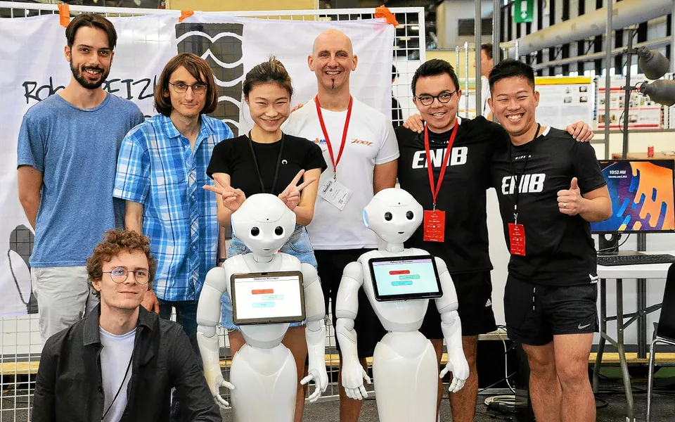
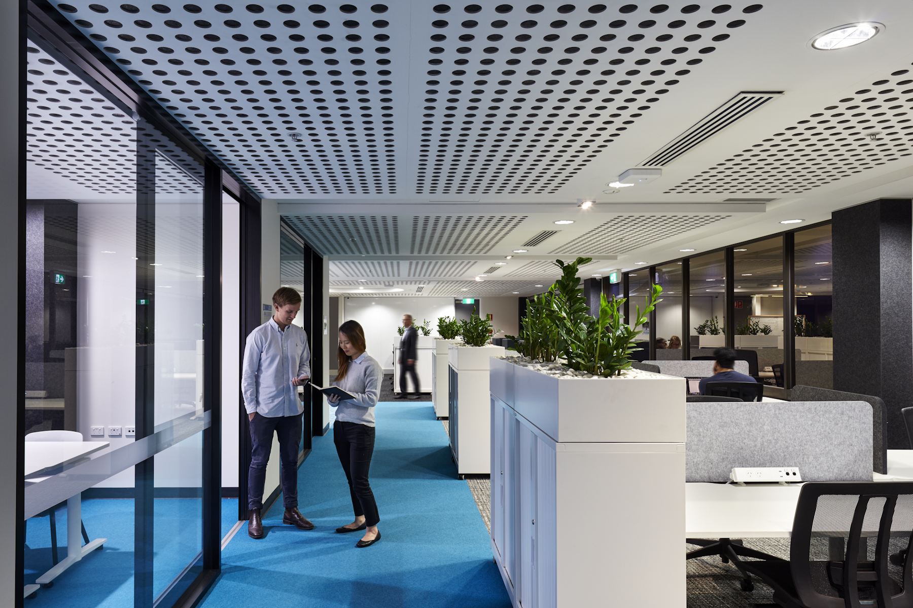

I build production software that solves real problems — from healthcare platforms to world-champion robotics systems.

📸 Project photo placeholder'" />Skilled in full-stack, cloud, and AI — I bring a strong analytical mindset to every layer of the stack, from API design down to deployment pipelines.
I collaborate across engineering, product, and operations teams to deliver scalable, user-focused outcomes — and I love roles that blend software fundamentals with applied AI.

📸 Team / collaboration photo placeholder'" />I co-designed and implemented the web application of Allied AU during a major upgrade. This healthcare platform connects specialised practitioners with their patients ensuring they receive the right care. My responsibilities included implementing the front-end, backend, CMS and their services on AWS. I also collaborated with my team to make and provide feedback on design decisions.
IRL Crossing
This project was completed during my software engineering internship at IRL Crossing. It focused on developing a suite of state-of-the-art systems for a robot designed to interact with and assist humans. The experience provided valuable insight into the integration of computer science and robotics, allowing us to explore the potential of these combined fields. Through our team's dedication and hard work, we ultimately achieved a world championship title.
Optimised API usage by 80%, implementing caching and debouncing techniques to improve system performance and cost effectiveness. Maintained AWS production and development environments, sustaining over 99% uptime. Developed bidirectional API integration features to synchronise schedules between internal systems and external scheduling platforms, ensuring accurate, real-time data exchange.
Tutored more than 10 university students on programming and prepared lesson schedule. Conducted weekly assignments, resulting in 50% grade improvement in half yearly exams. Developed tailor-made learning modules for students accelerated coding comprehension by breaking down complex concepts into practical applications.
Designed and deployed a SaaS service enabling secure external client access to previously functionally limited systems, improving user reach and system flexibility. Implemented UI/UX enhancements and user flow optimisation for a national allied health platform. Developed, debugged, and tested web features using Vue.js, Laravel, MySQL, AWS SES. Partnered with an agile hybrid team, including CEO, project manager, QA tester, and senior developer.
Designed and implemented a data-driven website to improve accessibility and user engagement. Conducted analytical research on web traffic patterns, identifying improvements for site functionality.
Developed web-based robot control solution enhanced human-robot interaction efficiency by 25%, optimising performance under strict hardware constraints. Collaborated with a high-calibre engineering team to refine algorithms, resulted in releasing 15% more CPU resources for other core tasks.
Formulated and led a self-initiated research project creating a framework for evaluating and developing AI curriculum for early education, translating complex concepts into engaging, accessible learning modules.
Led a self-proposed research project optimising machine learning performance and data processing efficiency.
Gained expertise in algorithm design, software development, and system optimisation. Strengthened collaborative skills by leading diverse project teams in delivering scalable software solutions.
Université de Bordeaux
Engineered AI-driven robotics software boosted object recognition accuracy by 35%, securing first place in an international competition.
Université de Bordeaux
Achieved first place in the Platform League category at RoboCup@Home 2023, competing against top international university teams with an autonomous human-service robot in Bordeaux, France.
The University of Adelaide
Strengthened inter-cultural collaboration with global teamwork challenges. Enhanced cross-cultural communication in a professional setting.
Cisco Networking Academy, Hong Kong & Macau
Gained first hand insight in network architecture and cybersecurity principles. Implemented secure networking solutions, showcasing expertise in cybersecurity principles and reducing security vulnerabilities by 50%.